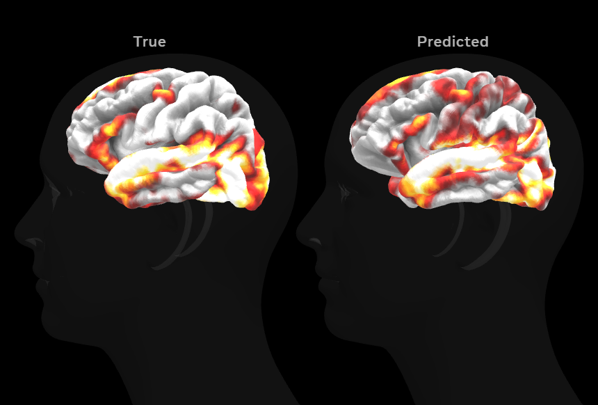

Evaluation Metrics
📈 Pearson Correlation
0.20
Average parcel-wise correlation.
🎯 Output Dimension
1000
Cortical parcels predicted.
🧠 Participants
4
Subjects evaluated.
🎬 Episodes
6 Seasons
Friends Dataset.
Evaluation of Cerebral Cinema on multimodal movie-to-brain prediction.
Average parcel-wise correlation.
Cortical parcels predicted.
Subjects evaluated.
Friends Dataset.
Training loss, validation loss and Pearson correlation measured across epochs.


The following visualization compares the predicted cortical activity with the recorded fMRI signal for a representative brain parcel.

The multimodal Transformer successfully learns joint representations from language and vision, enabling prediction of cortical responses to natural movie stimuli. Performance is evaluated using Pearson correlation, which measures similarity between predicted and recorded neural activity across brain parcels.